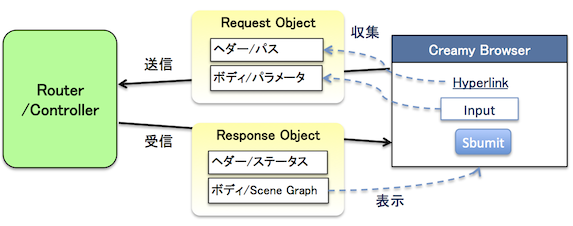
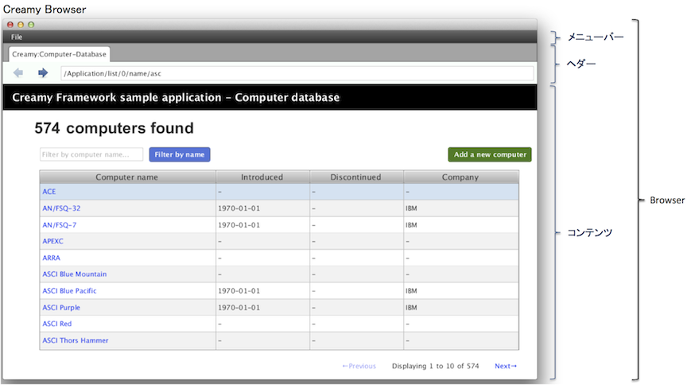

WebアプリケーションのUIは、Web Browserによって表示されます。
また、HTTPリクエストを送信し、HTTPレスポンスを受信するのもWeb Browserの役割です。
ステートレスなリクエスト/レスポンス で、Creamyアプリケーションは、Webアプリケーションと同じように、リクエスト/レスポンスで成り立っていることを説明しました。では、Creamyアプリケーションにおいて、Web Browserの役割を果たすものは何でしょうか？
それがCreamy Browserです。
Browserは、CreamyアプリケーションのUIを表示するためのCreamyのコンポーネントです。Creamyアプリケーションは、すべてBrowserコンポーネントを使用してUIを表示します。また、Routerへのリクエスト送信、Routerからのレスポンス受信もBrowserが行います。
以下に概念図をまとめます。
BrowserはCreamyのコンポーネントでありJavaクラスです。以下にBrowserの概観を示します。
Brwserの機能は大きく以下の3つに分けられます。
コンテンツ領域にHyperlink、Form/Submitボタン等の画面遷移用のコントロールを配置すると、 イベント発生時に、Browserは自動的にRequestオブジェクトを生成し、Requestを送信します。
これによりページ遷移が動作します。開発者はHyperlink、Submitボタンに、ハンドラーを登録する (ページ遷移の動作を記述)する必要はありません。イベントのハンドリングはBrowserが自動的に行います。
つまり、開発者は、Hyperlink、Formに宛先のパス(URL相当)を記述するだけで、ページ遷移を動作させることができます。
BrowserはResponseを受信すると、そのボディにある、Scene Graphオブジェクトをコンテンツ領域に表示します。
ページ遷移の履歴はBrowserによって自動的に管理されます。
開発者はヘッダ領域にBackButton、Forwardボタンを配置するだけで、Back/Forwardの機能を実現することができます。